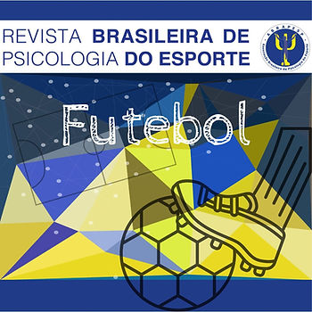

Você é um amante de futebol e/ou trabalha com a modalidade?
Nosso Comitê de Atualização Profissional fez uma seleção de todos artigos acadêmicos relacionados a modalidade publicados até então na Revista Brasileira de Psicologia do Esporte – RBPE (Consulta feita em 20 de abril de 2023). Lembrando que a revista tem avaliação Qualis A4 e possui política de acesso livre imediato.
Confira! Se preferir, baixe o pdf ao final do texto.
1. Comparação da atenção de atletas de futebol de base por categoria
Varley Teoldo Costa, Lafaiete Guimarães Moreira, Israel Teoldo da Costa, Daniella Moreira Paína, Leandro Fernandes Malloy-Diniz
2020-08-31
2. O que é ser jogador de futebol? Autoconceito de atletas do futebol sergipano.
Cleberson Franclin Tavares Costa, Aline da Conceição Souza Costa, Marlizete Maldonado Vargas
2018-10-28
3. Um olhar para os árbitros de futebol
Marta Aparecida Magalhães Sousa
2016-04-12
4. Fanatismo e agressividade em torcedores de futebol
Alina Mira Maria Coriolano, Erick Conde
2017-01-08
5. Ciência e futebol na pós-modernidade: por uma perspectiva crítica
Adriana Bernardes Pereira
2018-03-22
6. Craques da resistência: o futebol feminino em São Luís, Maranhão
Bruna Soares Pires, Cristianne Almeida Carvalho
2019-07-16
7. Revisão sistemática: instrumentos para avaliação do estresse e ansiedade em jogadores de futebol
Izabela Albino, Erick Conde
2019-07-16
Rafael Moreno Castellani, Ianni Regia Scarcelli
2020-09-14
9. Arbitragem no futebol de campo: estresse como produto de controle coercitivo
Norma Fernandes Pereira, Renata Grasielle Michielini Santos, Eduardo Neves Pedrosa de Cillo
2018-03-22
10. Avaliação do Status Social Subjetivo de atletas de categorias de base do futebol
Mateus Alves, Raísa Carvalho da Silva, Eduardo Marcel Fernandes Nascimento, Sabrina Fernandes de Azevedo, Érico Pereira Gomes Felden, Rubian Diego Andrade
2022-10-20
11. Representações de ansiedade e medo em atletas universitários
Cláudia Dias Leite, Amanda Alves Silva, Luciana Ferreira Angelo, Katia Rubio, Gislane Ferreira Melo
2016-04-12
12. Futebol e construção da subjetividade masculina: leituras da psicologia social
Marcel de Almeida Freitas
2018-03-22
13. Um jeito novo de jogar na medida: o futebol libertário
Fábio Silvestre da Silva, Katia Rubio
2018-03-22
14. Traços de personalidade, ansiedade e depressão em jogadores de futebol
Daniel Bartholomeu, Afonso Antonio Machado, Flavio Spigato, Luana Luz Bartholomeu, Heitor F. P. Cozza, José M. Montiel
2018-03-23
Rafael Bohn Volpato, Alice Rodrigues Willhelm, João Carlos Centurion Rodrigues Cabral, Rosa Maria Martins de Almeida
2022-10-20
Ivo Soares Xavier, Mario Yoshiro Kasai, José Mauro Malheiro Maia Junior, Miriam Raquel Meira Mainenti, Angela Nogueira Neves
2018-10-28
17. Representações sociais de estudantes do ensino médio sobre a educação física
Willian Costa de Freitas, Felipe da Silva Triani, Cristina Novikoff
2018-04-16
Jonas Fernandes Carvalho, Ana Cristina de Jesus Alves
2020-09-14
19. Percepções de ex futebolistas sobre o processo de envelhecimento e aposentadoria
Fernanda Vieira de Souza Oliveira, Michele Sousa, André Luiz de Seixas Soares, Luiz Eugênio Garcez Leme, Júlia Maria D’Andréa Greve, Rodrigo Jorge Salles, Angelica Castilho Alonso, Claudia Aranha Gil